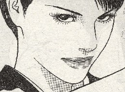
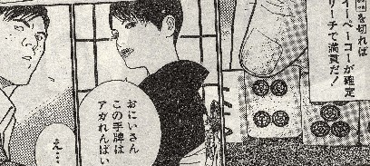
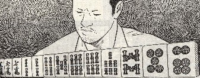
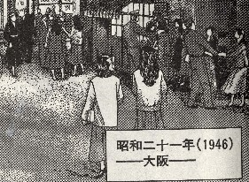
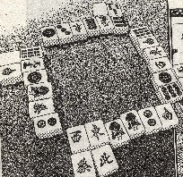
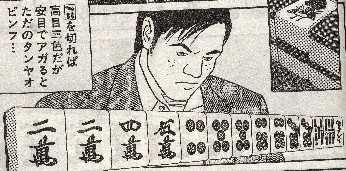

Book review 書壇。
（71）緋牡丹博徒

近オリ05年７月号(画・かどたひろし/原作・鈴木則文)
うへぇ、すげえ美人.....ひょっとして冬子の祖母なのか(^-^；
チラ見しただけで見えないはずの手牌も丸分かりなところを見ると、まず間違いない。(-_-)

でもまさか隣の手を覗いて云ってるんじゃないだろな....

それはいいけど、この漫画は昭和21年(1946年)の話。

その昭和21年に、６枚３段切りはゼッタイなかとですよ。

東京での麻雀シーンなら、イーペーコーやサンシキはもとより、リーチもなかとです。しかし大阪での麻雀シーンで通行人も長袖なので、昭和21年秋の話と思うとです。戦争が終わって１年半たっとりますんで、イーペーコーやサンシキはまぁええです。しかしいくら大阪でも、この時代に表ドラはなかとです.....

ヒロシです。時代考証を担当しとるとです。(-_-)